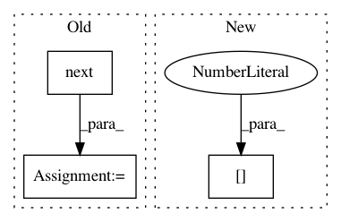

51f56cd2f529cbf92c0492c34510c040ed1b77fd,nilmtk/elecmeter.py,ElecMeter,power_series,#ElecMeter#,191
Before Change
then will attempt to use voltage data from this meter.
nominal_voltage : float
chunk = next(self.store.load(key=self.sensor_keys[0], **load_kwargs))
for key in self.sensor_keys[1:]:
chunk += next(self.store.load(key=key, **load_kwargs))
best_ac_type = select_best_ac_type(self.available_ac_types(),
measurement_ac_type_prefs)
yield chunk[Power(best_ac_type)].dropna()
After Change
while True:
try:
chunk = next(generators[0])
except StopIteration:
break
for generator in generators[1:]:
In pattern: SUPERPATTERN
Frequency: 4
Non-data size: 3
Instances
Project Name: nilmtk/nilmtk
Commit Name: 51f56cd2f529cbf92c0492c34510c040ed1b77fd
Time: 2014-05-22
Author: jack-list@xlk.org.uk
File Name: nilmtk/elecmeter.py
Class Name: ElecMeter
Method Name: power_series
Project Name: ntucllab/libact
Commit Name: 325fae8fbbc16b3c1ca40559bb2a9c783efaf440
Time: 2015-11-25
Author: yangarbiter@gmail.com
File Name: libact/query_strategies/active_learning_by_learning.py
Class Name: ActiveLearningByLearning
Method Name: make_query
Project Name: ruotianluo/self-critical.pytorch
Commit Name: 282e4e3255fd0be7c2df6f4a1ef2bbedf4eb7f82
Time: 2020-07-30
Author: rluo@ttic.edu
File Name: captioning/models/AttModel.py
Class Name: AttModel
Method Name: init_hidden